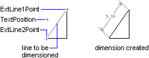

|
AddDimAligned Method |
Creates an aligned dimension object.
Signature
RetVal = object.AddDimAligned(ExtLine1Point, ExtLine2Point, TextPosition)
Object
ModelSpace Collection, PaperSpace Collection, Block
The objects this method applies to.
ExtLine1Point
Variant (three-element array of doubles); input-only
The 3D WCS coordinates specifying the first endpoint of the extension line.
ExtLine2Point
Variant (three-element array of doubles); input-only
The 3D WCS coordinates specifying the second endpoint of the extension line.
TextPosition
Variant (three-element array of doubles); input-only
The 3D WCS coordinates specifying the text position.
RetVal
DimAligned object
The newly created aligned dimension.
Remarks
In aligned dimensions, the dimension line is parallel to the extension line origins. The extension line origins are specified using the ExtLine1Point and ExtLine2Point properties.
 |
| Comments? |